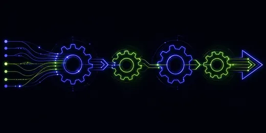

Work that moves
itself
Zapier and Make where they fit, custom code where they do not. Pick a workflow below and run it — every node reports as it executes.

What we build on
Zapier
Fastest to ship. Right for linear flows across popular SaaS tools where volume is moderate.
best under ~10k tasks/month
Make
Better for branching logic, iterators and anything where you need to see the data shape at each step.
best for complex branching
Custom code
Node or Python on your infrastructure. Right when volume, cost or data residency rules out a third-party platform.
best at scale · no per-task fee
We will tell you when not to automate
If a process runs twice a month and takes ten minutes, automating it costs more than it saves. Roughly a third of the workflows clients ask us to build, we recommend against. That advice is free.